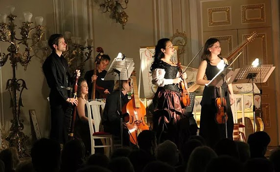

Программы

Ансамбль Barocco Concertato отличает неординарный подход к построению программ. Все они выстроены драматургически: у
каждой своя история, свое послание. Так, программа «Сейченто - колыбель скрипки» иллюстрирует рождение итальянской
скрипичной сонаты в начале XVII века (от сонат первого профессионального скрипача Бьяджо Марини), ее рост и становление
в течение всего века: Марко Уччелини, Джованни Пандольфи Меалли, Арканджело Корелли и достижение зрелости формы в
сонатах Вивальди, Джеминиани, Тартини.
Программа «Скрипка её Величества» создает атмосферу русского двора XVIII века, когда лучшие европейские скрипачи и
композиторы приезжали на службу к русским императрицам - сонаты композиторов Мадониса, Самартини, Далолио, а также таких
авторов, как Вивальди и Тартини: в Петербурге они не были никогда, но их музыка пользовалась большой популярностью при
царском дворе. Заканчивается программа произведениями уже русских авторов - Бортнянского и Хандошкина (по легенде он был
учеником самого Тартини).
Оркестровые и вокальные программы точно так же имеют драматургические линии и погружают зрителя в атмосферу героев
барочных опер и балетов. Театрализованный спектакль-фарс «Космос и барокко» переносит зрителей на площадь итальянского
города XVII века, на выступление шарлатана-астролога и целителя, который через воздействие планет вылечивает пациента от
недугов. Каждая планета соответствует определенному темпераменту, а с каждым темпераментом связана определенная
тональность, на этом строилась знаменитая теория аффектов (то есть чувств) которая является одной из основ искусства
Эпохи Барокко.
В настоящее время камерный ансамбль Barocco Concertato формирует ангажемент на сезон 2016-2017 гг.